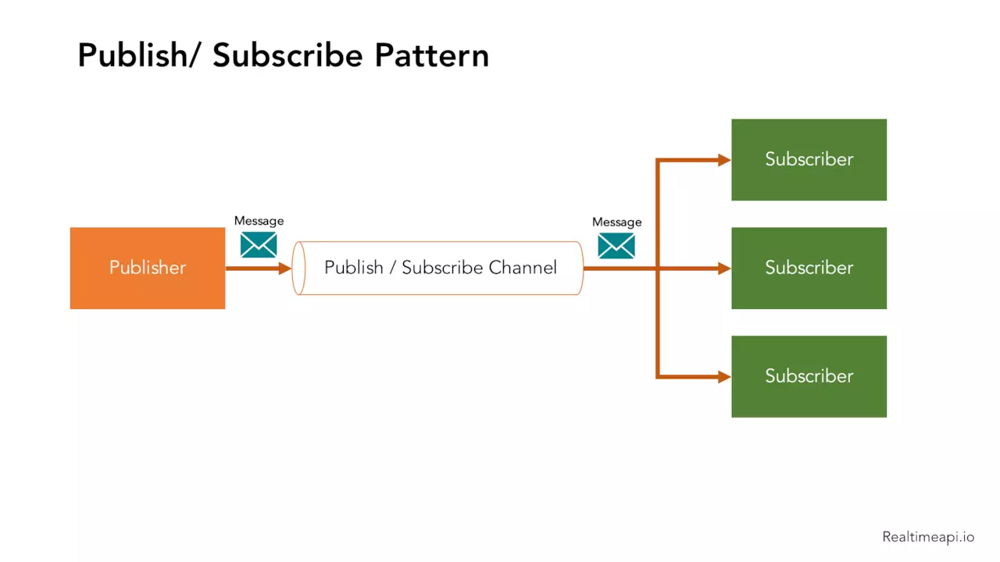
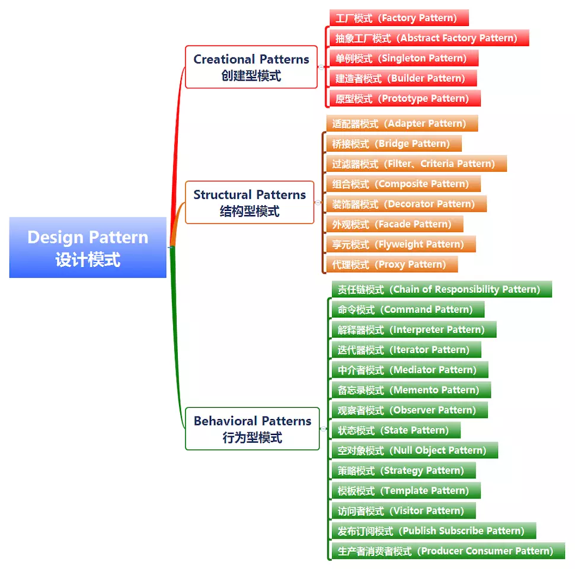
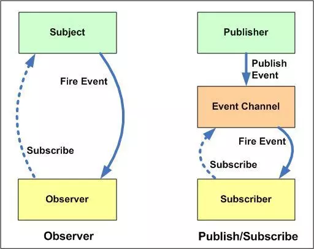
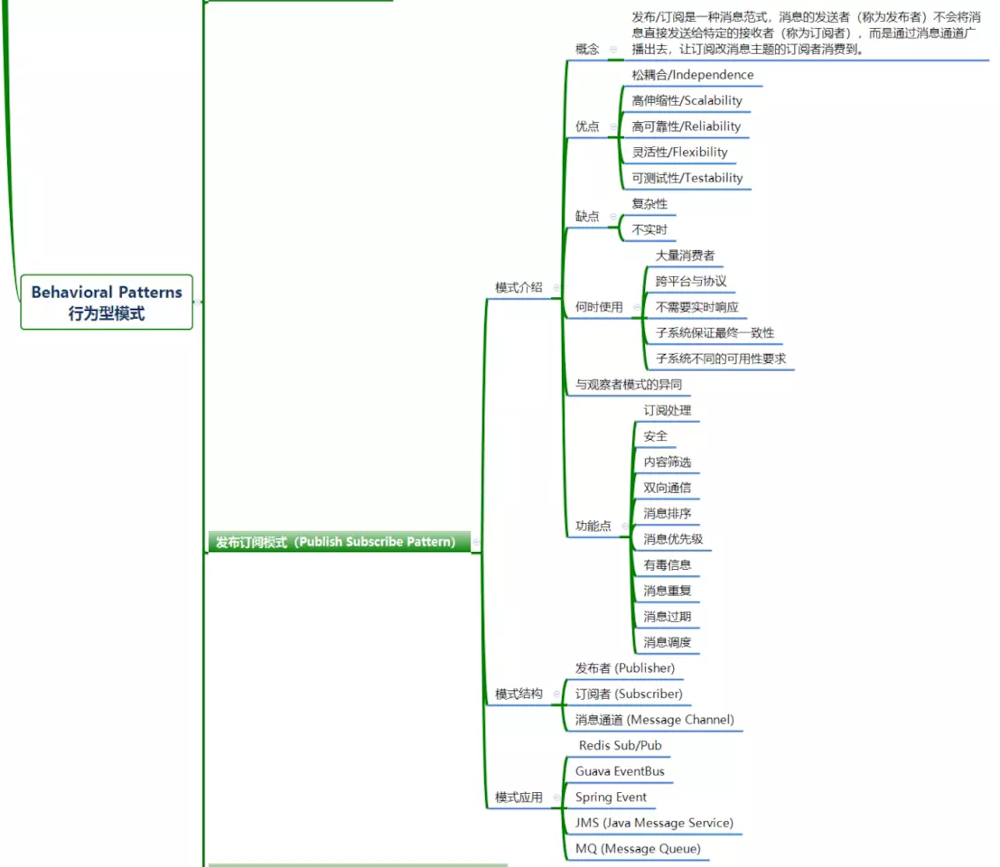

单例模式
确保一个类最多只有一个实例，并提供一个全局访问点
单例模式只生成一个实例对象，减少了对系统资源的开销，单一个对象的产生需要比较多的资源，如读取配置文件、产生其他依赖对象时， 可以产生一个“单例对象”，然后永久驻留内存中，从而极大的降低开销。
建立数据库连接
1 | 1.什么是单例模式 |
1 | # #单例模式 |
###工厂模式
1 | class CarFactory: |
三、策略模式
策略指的就是为了达到某一目的而采取的多种手段或者方法。
为了实现软件设计，对象可能会用到多种多样的算法(逻辑)。这些算法甚至会经常改变。如果将这些算法都硬编码到对象中，将会使得对象本身变得臃肿不堪，
策略模式很好的实现了将算法与本身对象解耦，从而避免出现上述的问题。
因此策略模式可以定义为： 定义一系列算法(逻辑)，将每一个算法封装起来(一个算法创建一个类)，并让它们可以相互替换。此模式让算法的变化,不会影响到使用算法的客户.
1 | # 抽象策略类 |
四.发布订阅模式
熟悉消息中间件的同学应该对发布/订阅模式(Publish Subscribe Pattern)并不陌生。即使你不了解消息中间件，那么在平时生活中发布/订阅模式也是非常常见的场景。
比如你打开你的微信订阅号，你订阅的作者发布的文章，会广播给每个订阅者。在这个场景里，微信公众号就是一个Pulisher，而你就是一个Subscriber，你收到的文章就是一个Message。

下面我们就一起了解一下发布/订阅模式，如果你要了解并在自己的项目中使用这个模式，或者你对消息队列(MQ)等中间件的原理感兴趣，那么这个系列的文章就是最高效地深入浅出宝典。
模式介绍
发布/订阅模式(Publish Subscribe Pattern)属于设计模式中的行为(Behavioral Patterns)。

在软件架构中，发布/订阅是一种消息范式，消息的发送者（称为发布者）不会将消息直接发送给特定的接收者（称为订阅者），而是通过消息通道广播出去，让订阅改消息主题的订阅者消费到。
发布/订阅者模式最大的特点就是实现了松耦合，也就是说你可以让发布者发布消息、订阅者接受消息，而不是寻找一种方式把两个分离的系统连接在一起。当然这种松耦合也是发布/订阅者模式最大的缺点，因为需要中间的代理，增加了系统的复杂度。而且发布者无法实时知道发布的消息是否被每个订阅者接收到了，增加了系统的不确定性。
发布/订阅者模式的优点
发布/订阅者模式的优点可以归纳为:
松耦合/Independence
发布/订阅者模式可以将众多需要通信的子系统(Subsystem)解耦，每个子系统都可以独立管理。而且即使部分子系统下线了，也不会影响系统消息的整体管理。
发布/订阅者模式为应用程序提供了关注点分离。每个应用程序都可以专注于其核心功能，而消息传递基础结构负责将消息路由到每个消费者手里。
高伸缩性/Scalability
发布/订阅者模式增加了系统的可伸缩性，并提高了发送者的响应能力。原因是发送方(Publisher)可以快速地向输入通道发送一条消息，然后返回到其核心处理职责，而不必等待子系统处理完成。然后消息传递的基础结构负责确保把消息传递到每个订阅者(Subscriber)手里。
高可靠性/Reliability
发布/订阅者模式提高了可靠性。异步的消息传递有助于应用程序在增加的负载下继续平稳运行，并且可以更有效地处理间歇性故障。
灵活性/Flexibility
你不需要关心不同的组件是如何组合在一起的，只要他们共同遵守一份协议即可。
发布/订阅者模式允许延迟处理或者按计划的处理。例如当系统负载大的时候，订阅者可以等到非高峰时间才接收消息，或者根据特定的计划处理消息。
可测试性/Testability
发布/订阅者模式提高了可测试性。通道可以被监视，消息可以作为整体集成测试策略的一部分而被检查或记录。
实现发布/订阅者模式需要考虑的点
订阅处理
订阅者可以在消息通道中订阅或者取消订阅某个话题。
安全
连接到任何消息通道必须受到安全策略的限制，以防止未经授权的用户或应用程序窃听。
内容筛选
根据每条消息的内容检查和分发消息。每个订户都可以指定其感兴趣的内容。
订阅者通常只对发布者分发的消息的子集感兴趣。消息服务通常允许订户缩小以下用户接收到的消息集。
考虑允许订户通过通配符订阅多个主题。每个主题都有一个专用的输出通道，每个使用者都可以订阅所有相关主题。
双向通信
发布订阅系统中的通道被视为单向的。
如果特定订户需要向发布服务器发送确认或通信状态，请考虑使用请求/回复模式。此模式使用一个通道向订阅服务器发送消息，以及一个单独的回复通道向发布服务器进行通信。
消息排序
使用者实例接收消息的顺序不一定得到保证，也不一定反映消息的创建顺序。
设计该系统以确保消息处理是等量的，以帮助消除对消息处理顺序的任何依赖。
消息优先级
有些解决方案可能需要按特定顺序处理消息。优先级队列模式提供了一种确保特定消息先于其他消息传递的机制。
有毒信息
格式错误的消息或需要访问不可用资源的任务可能会导致服务实例失败。系统应防止此类消息返回到队列，否则可能导致系统故障。
消息重复
同一消息可能会发送多次。例如，发送者可能在发布消息后出现了异常，没有记录自己已经成功发送了消息，然后，发送者的新实例可能会启动并重复该消息。
消息基础结构应基于消息ID实现重复消息检测和删除（也称为重复数据消除），以便最多提供一次消息传递。
消息过期
消息的生命周期可能有限。如果在这段时间内没有处理，它可能不再有价值，应该丢弃。发送方可以指定过期时间作为消息中数据的一部分。在决定是否执行与消息关联的业务逻辑之前，接收者可以检查此信息，以确保消息没有过期。
消息调度
例如，消息可能会被暂时禁止，直到特定的日期和时间才被处理。
何时应使用发布/订阅者模式
如果你的程序只有很少的订阅者，或者需要与子系统进行实时的交互，那么发布/订阅者模式是不适合的。
在以下情况下可以考虑使用此模式：
应用程序需要向大量消费者广播信息。例如微信订阅号就是一个消费者量庞大的广播平台。
应用程序需要与一个或多个独立开发的应用程序或服务通信，这些应用程序或服务可能使用不同的平台、编程语言和通信协议。
应用程序可以向消费者发送信息，而不需要消费者的实时响应。
被集成的系统被设计为支持其数据的最终一致性模型。
应用程序需要将信息传递给多个消费者，这些消费者可能具有与发送者不同的可用性要求或正常运行时间计划。例如你消息在上午发布了出去，消费者计划在下午才去处理这些消息。
发布/订阅者模式与观察者模式
发布/订阅者模式与观察者模式是我们经常混淆的两种设计模式，可以说两种设计模式在行为上有一定的相似性，但却是两种不同的设计模式。或者说发布/订阅者模式是观察者模式的一种变体。
通过下图可以清晰地看到两种设计模式的不同点。

发布/订阅者模式与观察者模式主要有以下几个不同点：
在观察者模式中，主体维护观察者列表，因此主体知道当状态发生变化时如何通知观察者。然而，在发布者/订阅者中，发布者和订阅者不需要相互了解。它们只需在中间层消息代理（或消息队列）的帮助下进行通信。
在发布者/订阅者模式中，组件与观察者模式完全分离。在观察者模式中，主题和观察者松散耦合。
观察者模式主要是以同步方式实现的，即当发生某些事件时，主题调用其所有观察者的适当方法。发布服务器/订阅服务器模式主要以异步方式实现（使用消息队列）。
发布者/订阅者模式更像是一种跨应用程序模式。发布服务器和订阅服务器可以驻留在两个不同的应用程序中。它们中的每一个都通过消息代理或消息队列进行通信。

本文介绍了发布者/订阅者模式的相关概念，后面几篇会详细介绍具体实现。